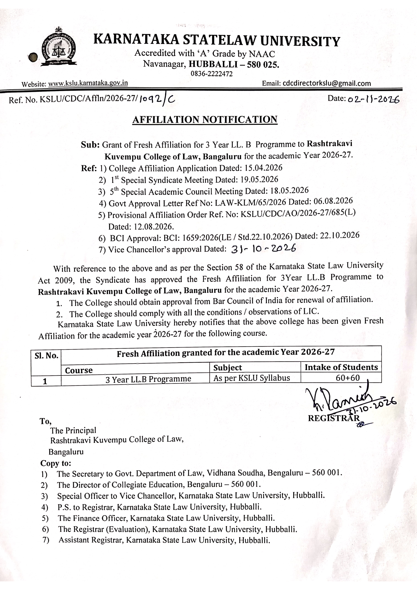

Rashtrakavi Kuvempu College of Law
Direct admissions are open for the prestigious 3-Year Professional LL.B programme at Rashtrakavi Kuvempu College of Law, Bengaluru. Fresh affiliation granted by Karnataka State Law University (KSLU), Hubballi with an approved intake of 60+60 (120 seats).
Approved Intake: 120 Students (60 + 60 in two sections) as sanctioned by KSLU and BCI.
KSLU Base Minimum Eligibility Criteria:
Mandatory Admission Certificates Checklist:
For immediate admissions assistance and counseling, visit our campus desk at No.10, Near Janapriya Apartment, Kadabagere, Bangalore – 562130 or call Mob: 9886129222 / Email: principal@kuvempulawcollege.co.in.
Official Notification from Karnataka State Law University (Accredited 'A' Grade by NAAC), Hubballi granting Fresh Affiliation for 3-Year LL.B Programme to Rashtrakavi Kuvempu College of Law, Bengaluru for Academic Year 2026-27 (Approved Intake: 60+60 Students).
Karnataka State Law University, Hubballi has officially issued the Affiliation Notification granting Fresh Affiliation to Rashtrakavi Kuvempu College of Law under Section 58 of the Karnataka State Law University Act 2009 for the academic year 2026-27.
KSLU Hubballi Affiliation Order Ref. No. KSLU/CDC/Affln/2026-27/1092/C

The academic board has published the curriculum mapping for the 3-Year professional LLB course spanning 6 semesters.
The curriculum spans three functional academic years split into two semesters of 18 continuous teaching weeks apiece:
Pursuant to UGC regulations and KSLU directives, the statutory compliance boards have been officially formed for safety and campus dignity.
All cells are active and ready to support a zero-tolerance ragging policy at our Bangalore campus:
Detailed circulars, member indices, and compliance bylaws are posted on our statutory pages.